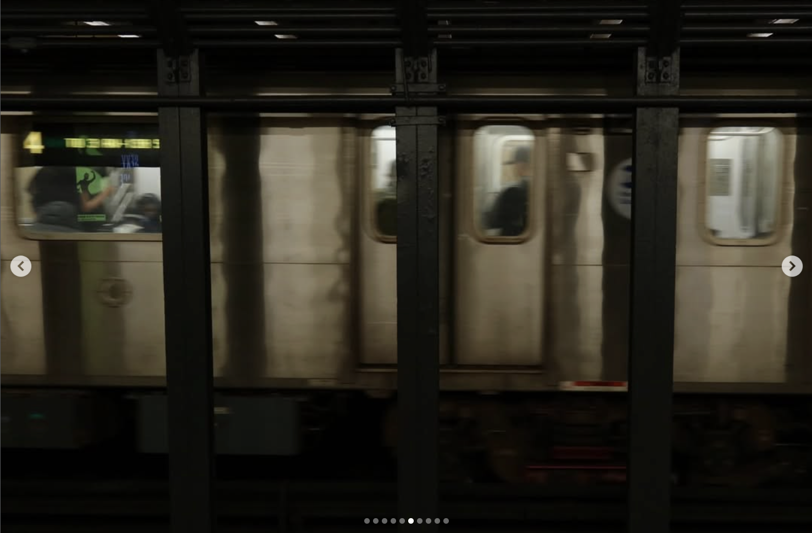

About this interview
Alicia is a multidisciplinary artist who sings, draws, writes poetry and short stories, and takes photographs. We sat down to talk about how her different creative outlets relate to each other, what drives her to make art, and why she thinks learning to notice small things changed her life. This interview has been lightly edited for clarity.


Alicia's Instragram Feed.
The Conversation
Mia
You sing, you draw, you make really aesthetic Instagram posts and stories, you write poems and short stories, and you take a lot of pictures. Do you think of yourself as one type of artist, or do you feel like all these creative expressions are expressions of the same thing?
Alicia
With short stories and poems, I write to escape a reality I don't want to live in. When I'm trying to interpret someone else's artwork, it's similar — I use those forms to build another interpretation, because I don't like the very direct feelings I get just from looking at them. But when I take photos or draw things, I tend to take in more of reality and make it more memorable.
Mia
Is there a common theme or feeling that runs through everything you make?
Alicia
I don't know about a common theme, because I create art about very different things. But one thing that's consistent is that I care a lot about the temperature of my art — how warm or cold it is — based on how emotionally attached I am to the subject.
Mia
When you say temperature, do you mean how other people feel, or how you feel making it?
Alicia
It's primarily how I feel while making it, but usually other people feel the same way. Cold usually shows up when I'm writing, because I'm trying to form another reality. But when I'm recording memories through photography, that tends to be warmer — I enjoy being in the present and I like bringing those moments in.
"I care a lot about the temperature of my art — how warm or cold it is — based on how emotionally attached I am to the subject."— Alicia
Mia
Where does an idea usually start for you? A feeling, an image, a sound, a line of text?
Alicia
I get my inspiration through people — I really like to people-watch. I don't sit down and try to think of things to create art about. It's mostly just about what I see in the moment, and if I feel like I like it, I try to capture it. When I'm writing, it's inspired by things related to my life. I wrote a short story about dementia patients because I was volunteering at a nursing home, and I wanted to record that moment.
Mia
You went to New York recently — every day I'd wake up and look at your Instagram stories and think, wow, you really see the beauty in things I wouldn't notice. Do you think everyone sees beauty?
Alicia
I think everyone can. Maybe some people choose not to because they're too caught up in other things. I used to be one of those people when I was younger, but then I got really depressed, and I started trying to find meaning in smaller things. You don't have to do big, profound things to feel happier — you just have to start noticing the small details. And when you get used to noticing them and logging them, you start finding reasons to walk more, to travel, to look around. It builds into this positive cycle of being happier, finding new things, logging them, and then wanting to look around even more.
"You don't have to do big, profound things to feel happier — you just have to start noticing the small details."— Alicia

From Alicia's travels.
Mia
How would you describe your creative process? Is it spontaneous, or more gradual?
Alicia
I think the gradual process describes how I come up with a lot of my work. But the art I'm most proud of has usually been carefully curated. When I sit down and try to force an idea, I just can't — they come out really lame, and I end up imitating other artists, which makes my art feel fake. So I'd say spontaneous, overall.
Mia
Do you think you're critical of your own art?
Alicia
It depends on the kind of art and when I made it. If I wrote a depressing poem at 2 AM and looked back at it the next morning, I'd probably think it was really bad. With photography, or especially with my singing, I'll record something and think it's good in the moment — and then three days later I'll listen back and realize the pitch was off. I'm really critical about my singing. But with photography it's almost the opposite — I'll have photos I really love, and even if someone tells me they're not worth posting, I get sad but I still post them, because I still think they're good.
Mia
Do you think what you make matches what you're thinking of, or is there a gap?
Alicia
This is something I've been stressing about for years, especially with drawing and sketching. I'd have this really profound vision of what I wanted to draw, try to paint it, and it would always fail — it would always turn out to be something else. So I switched from a realistic style to rough sketches, so I could capture the vibe. That's part of why I moved toward photography — it helps me capture the moment exactly the way I want it. For art I create digitally on a tablet, I can maintain the vision.
Mia
Has making art ever helped you process something you couldn't articulate otherwise?
Alicia
Whenever I'd see something beautiful and try to describe it to my friends or family — like "oh, the dandelion fuzz sticking out of the concrete was really pretty" — they just wouldn't get it, because that description sounds like just a dandelion. But if I captured it well, with the light streaming and shining on it, and showed them, they'd think it was beautiful too, or at least understand what I was trying to say.
"I pour my emotions into what I'm capturing. If I'm with people I care about, I'll take a bunch of photos — I want to capture the moment."— Alicia
Mia
Do you have any advice for other artists, or for people trying to make art?
Alicia
I don't think I have advice for other people. Everyone has their own style and their own creative process. Questions like these lead to different answers for everyone, and I don't think you can create a path for someone else to follow — they'll develop their own vision and their own way.
Alicia
I do want to add one thing — I take photos of whatever comes up naturally. If I'm with my friends, I'll take a bunch of photos because I think they're beautiful and I want to capture the moment. But for people I don't really care about, or if I'm in a situation where I'm forced to take photos of people I don't like, the photos just aren't the same. I pour my emotions into what I'm capturing.